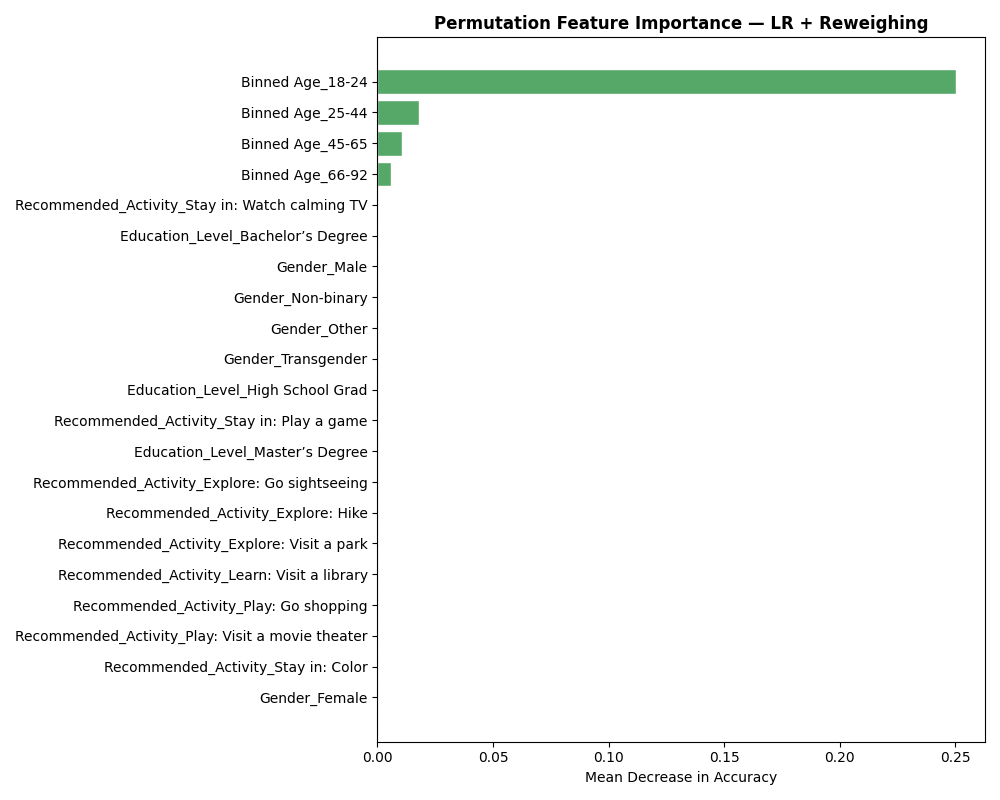
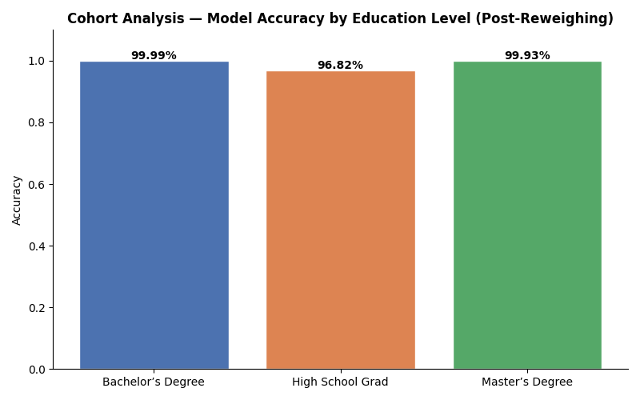
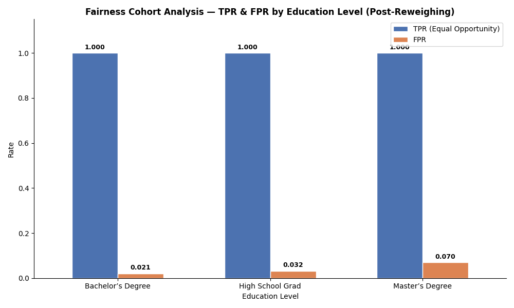

Model Details
- Budget Predictor AI is a binary classification model that predicts whether an IDOOU app user has a budget of >= $300 or < $300, based on demographic features including age, gender, and education level.
- The model is built using Logistic Regression, trained on a synthetic dataset of ~103,000 users (after preprocessing) derived from a 300,000-participant user experience study.
- Input features include one-hot encoded gender, binned age groups (18-24, 25-44, 45-65, 66-92), education level (High School Grad, Bachelor's Degree, Master's Degree), and recommended activity type.
- The model was evaluated using balanced accuracy, fairness metrics (SPD, Disparate Impact, Average Odds Difference), and a confusion matrix.
Intended Use
- Primary use: Predict a user's budget category to personalize activity recommendations within the IDOOU app.
- Interpretability: Users should be prompted to confirm or correct the model's budget prediction before recommendations are generated, keeping a human in the loop and reducing the risk of incorrect personalization.
- Privacy: The app should clearly disclose which demographic features are used in predictions and allow users to opt out of providing sensitive information such as education level or age.
- Fairness: The model should not be used as a sole decision-making tool for users with High School education, given identified disparate impact. Budget predictions should be treated as suggestions, not facts.
- The model is not intended for use outside of activity recommendation and should not be used to make financial, credit, or employment-related decisions.
Factors
- Relevant features: Age (binned), Gender, Education Level, Recommended Activity. Education level and age are the dominant predictors due to near-perfect Cramér's V associations with budget (0.98 and 0.97 respectively).
- Evaluation groups: Users are disaggregated by education level — privileged group (Bachelor's + Master's Degree holders) vs. unprivileged group (High School Graduates).
- Known disparities: The 18-24 age group (49% of the dataset) has a 100% rate of < $300 budget, which heavily correlates with the High School Grad education group, amplifying bias.
- Gender and parental status (With children?) showed near-zero association with budget and contribute minimally to predictions.
Metrics
- Balanced Accuracy: 99.78% on the test set for both Logistic Regression and Gaussian Naive Bayes.
- Statistical Parity Difference (before mitigation): -0.984 — far outside the fair range of [-0.1, 0.1], indicating severe bias against High School Graduates.
- Disparate Impact (before mitigation): 0.009 — far below the 0.8 fairness threshold, meaning HS Grads receive the favorable outcome (>= $300) at less than 1% the rate of post-HS users.
- Average Odds Difference: -0.52 | Equal Opportunity Difference: -1.0 | Theil Index: 0.0025
- Equal Opportunity Difference of -1.0 indicates that HS Grad users with a true budget of >= $300 are never correctly predicted as such — a complete false negative failure for this group.
Training Data
- Training data consists of 50% of the preprocessed dataset (~51,700 rows), split using AIF360's BinaryLabelDataset.split([0.5, 0.8], shuffle=True).
- The dataset was derived from a 300,000-participant synthetic user experience study, reduced to 103,459 rows after removing NaN values and filtering to only include High School Grad, Bachelor's Degree, and Master's Degree education groups.
- All features are one-hot encoded categorical variables. Raw Age and Budget columns were binned before encoding.
Evaluation Data
- Evaluation used the test split: the remaining 20% of the dataset (~20,700 rows) after the 50% train and 30% validation splits.
- The same privileged (Bachelor's + Master's) and unprivileged (High School Grad) group definitions were used consistently across training and evaluation.
- Fairness metrics were computed using AIF360's ClassificationMetric across 50 decision thresholds (0.01 to 0.5), selecting the threshold with the best balanced accuracy.
Quantitative Analysis — Before & After Reweighing
Balanced Accuracy
99.78%
98.24%
Maintained ✓
Stat. Parity Diff
-0.9909
-0.9471
Outside ±0.1
Disparate Impact
0.009
0.044
Below 0.8 threshold
Avg Odds Diff
-0.5205
-0.003
Within ±0.1 ✓
Equal Opp Diff
-1.000
0.000
Perfect ✓
Theil Index
0.0025
0.0035
Within range ✓
Pipeline

Post-Reweighing Results



Ethical Considerations
- The IDOOU Budget Predictor AI uses demographic proxies (age, gender, education level) to predict a user's budget category. While the model achieves high accuracy, it encodes real-world socioeconomic inequalities present in the training data, particularly the strong correlation between age, education level, and budget.
- Human-in-the-loop: Users should be prompted to confirm or correct the model's budget prediction before activity recommendations are generated. Users can also choose not to provide demographic information, and the app should still function with partial inputs.
- Bias in data: The dataset is heavily skewed toward 18-24 year olds (49%), who have a 100% rate of <$300 budget. This age group strongly overlaps with High School Graduates, causing the model to conflate age and education as proxies for low budget. Reweighing was applied to partially address this imbalance.
- Model failures: Before mitigation, the model never correctly predicted >=$300 for any High School Graduate (Equal Opportunity Difference = -1.0). After Reweighing, this was corrected to 0.0, but Statistical Parity Difference and Disparate Impact remain outside fair thresholds, indicating the underlying data imbalance persists.
- Potential harms: Users with High School education may receive consistently under-personalized activity recommendations, limiting their experience with the app and reinforcing socioeconomic stereotypes about spending capacity.
- Key contributing factors (before mitigation): Binned Age_18-24 was the dominant feature (~0.07 importance), followed by education level features. After Reweighing, education level features became the primary drivers, reducing the model's over-reliance on age as a decision rule.
Caveats & Recommendations
- The dataset lacks behavioral signals such as past spending history or stated budget preferences. Relying solely on demographic proxies introduces systemic bias and limits model fairness regardless of mitigation techniques applied.
- The 18-24 age group is overrepresented at 49% of the dataset, and older age groups (66-92) are severely underrepresented at 5.7%. Models trained on this data may not generalise well across age groups.
- The model is predisposed to false negatives for High School Graduates — systematically under-predicting their budget as <$300 even when their true budget is >=$300. This was partially resolved via Reweighing but not fully eliminated.
- Bachelor's and Master's Degree holders make up ~49% of the dataset combined, giving them 3x the representation of High School Graduates (~17%). This imbalance directly biases model training.
- Further ethical AI analyses I would apply beyond this project: counterfactual fairness testing to evaluate how predictions change when only education level is altered; and individual fairness analysis to ensure similar users receive similar recommendations regardless of demographic group membership.
Business Consequences
- Positive Impact: The IDOOU Budget Predictor AI enables personalised activity recommendations at scale, improving user engagement and satisfaction. Accurate budget predictions help surface relevant activities users are likely to act on, increasing app usage and conversion rates.
- Negative Impact: If users from lower education backgrounds consistently receive under-personalised or budget-restricted recommendations, they may lose trust in the app and disengage. Public disclosure of bias against High School Graduates could damage brand reputation, attract regulatory scrutiny, and result in loss of revenue from a significant user segment.